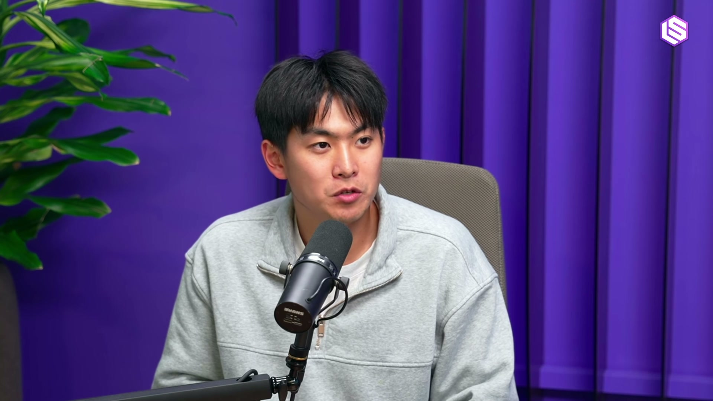
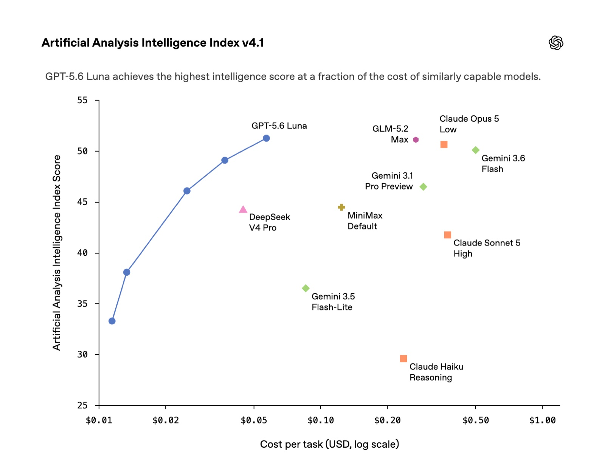
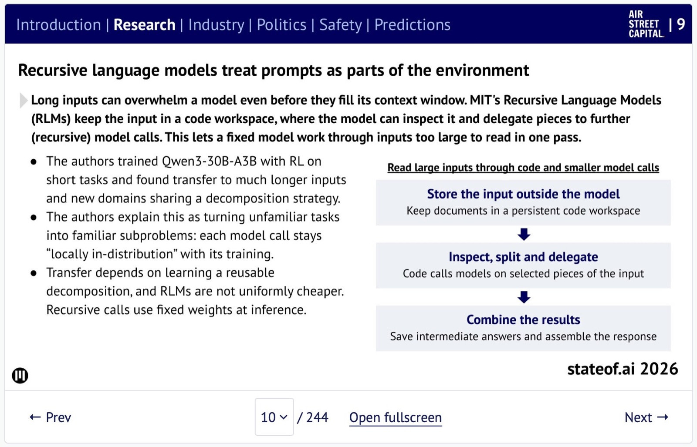
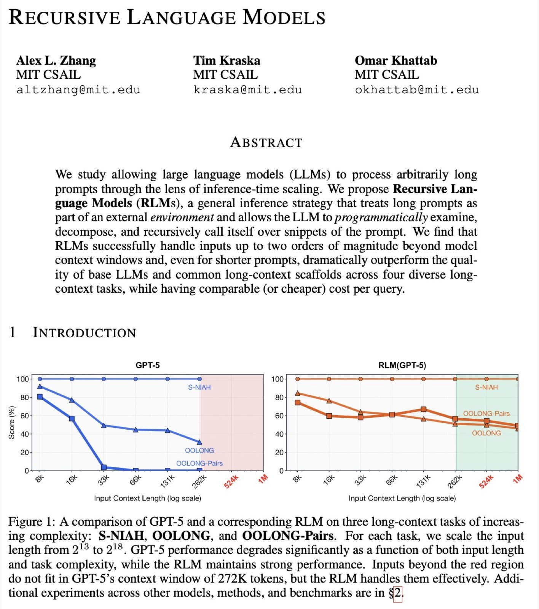
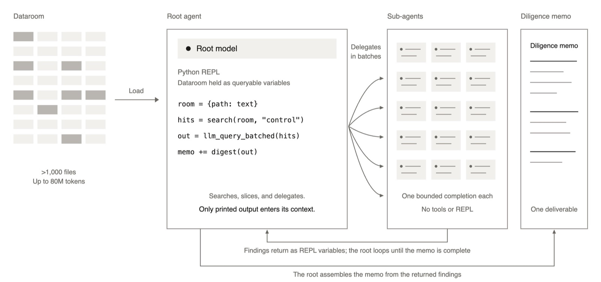
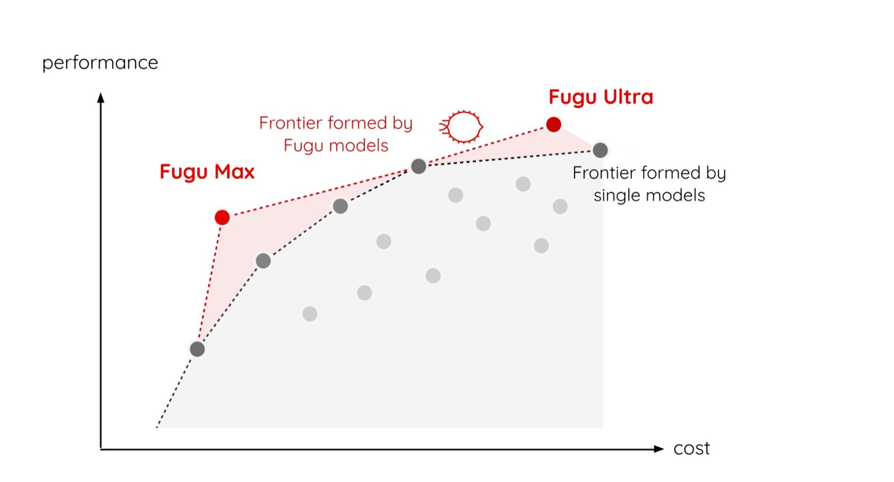
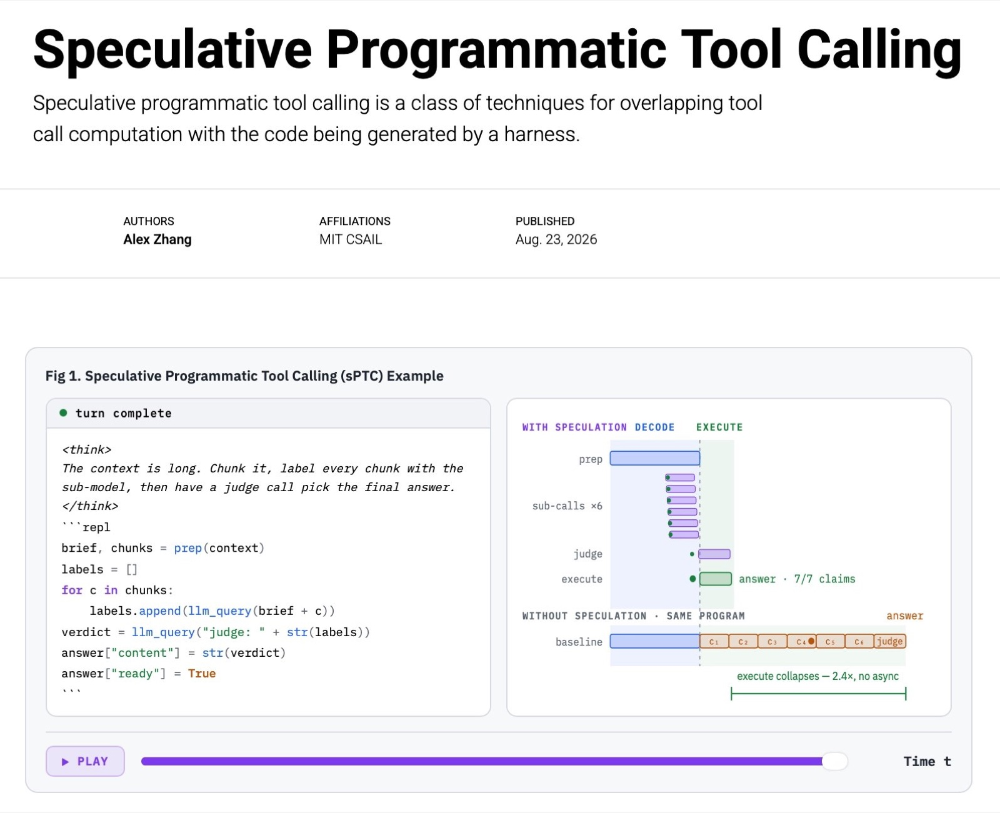

前十里的其他 AI 生成解排行榜前十 ✓ · 放进端到端系统不稳定 ✕ · 代码更长
一位老成员的解：他用 AI，但由他掌舵排行榜前十 ✓ · 端到端稳定 ✓ · 代码短得多
他的结论：“GPU kernel 有验证问题。”会写 kernel 仍然很有价值。
模型够聪明了，缺的是更好的 harness
阅读约 15 分钟
Zhang 是 MIT CSAIL 博士生，RLM 论文第一作者，KernelBench 作者之一12。主持人 swyx 和 Vibhu Sapra3。访谈里的 GPT-6 Astra（OpenAI）和 Fable（Anthropic）是 2026 年的前沿模型45。

今天的模型被包在大同小异的 harness（包住模型、让它调用工具的外层程序）里，能力没有用足。
研究这边：学术界的优势，是去押工业界不押、初看“很蠢”的注。
模型已经很聪明，为什么能力还没用足？harness、RLM 和 swarm 各补上哪一块？
斜纹 = 开头预告剪辑，本页略去
AI 写的 kernel 占满排行榜，专家仍是最强的验证器；博士生该押怪注。
语言模型不必是自回归解码器；主流 harness 都一样，好设计换来组合泛化。
只有代码一种工具，上下文放在环境里；已有多家在用。
砸钱能解难题；他估计大部分搜索是浪费，收敛要靠训练。
长而简单的工作还做不可靠，是“技能问题”；他押 harness。
GPU Mode and AI-written kernels
分数高，不等于能用
GPU Mode 排行榜上几乎全是 AI 写的 kernel，但前十名里只有一位老成员掌舵写出的那份，放进真实系统还稳定。kernel 有验证问题。
他的结论：“GPU kernel 有验证问题。”会写 kernel 仍然很有价值。

主持人 Vibhu 说 GPT-5.6 写的 kernel 让 Terra 和 Luna 便宜 80%。实际是 Luna 降 80%、Terra 降 20%；kernel 由 GPT-5.6 Sol 经 Codex 改写6。
原帖 ↗Human expertise vs brute-force AI search
一个洞见，抵一万亿 token
懂行的人是最强的验证器：swarm 也许要烧一万亿 token 才摸到的东西，专家一个洞见就能省掉。
Research taste and taking big bets
别人说“这不就是 subagents”时
学术界最成功的研究，做的是工业界没在看的问题。别人第一反应是“这有什么用”，往往是好信号。
RLM 确实会派子调用。他在 06 里的定义是：唯一的工具是代码，派子调用（包括调用自己）是代码里的函数，上下文一直存在代码环境里，比如文件系统。
差别在编排方式：常规 harness 每轮调一个工具，把轨迹不断追加进 prompt；RLM 用代码编排子调用，守着一份能随时回查的中央上下文，每个子调用只看局部。→ 06 RLM 是什么
背景 论文 arXiv 首版 2025-12-31，作者 Alex Zhang、Tim Kraska、Omar Khattab。2
背景 Jev 是 TypeSafe AI 的模型，不是 Alex 的工作。“早就有了”也不是 TypeSafe 说的，而是网上对它的评价。7 → 03 重想“语言模型”
他的结论：这些都不是马上能用的产品，而是大注。“不可能”“太显然”“有什么用”这类反应，说明大家还没想清它的用途。能押这种注，是博士生最大的优势。
Jev and rethinking the language model
输出空间也是旋钮
Jev 的意义不在“又一个分类器”，而在它提出的问题：语言模型一定要是“文本进、文本出”的自回归解码器吗？输出空间和推理延迟可以一起调。
示意：两边都用语言模型骨干，差别在输出空间。他说不知道 Jev 内部怎样实现。
Why Claude Code, Codex and Pi are so similar
harness 是一段有主见的程序
Claude Code、Codex、Pi 的设计选择几乎一样。harness 决定模型怎样“贴合”一个问题；设计得好，不同的任务在模型眼里会变成同一个任务。
背景 例子和数字来自他的博客。26
两个任务：检索，是在一大堆文档里找出某个问题的答案；聚合，是在一大批数据里做统计，比如每一类各有几条。领域和问题完全不同，但解法相同：切成小块，逐块处理，再合并结果。
任务说明、整批文档或数据、每次工具调用的结果，按顺序一直追加，这就是“整条轨迹当 prompt”。两个任务的文字完全不同，模型在一个任务上学到的，很难搬到另一个任务。
文档或数据存进变量 context，问题存进 query。主模型看不到它们的内容，只写代码（简化示意）：
# 切成 20 块 chunks = split(context, 20) # 每块交给一个子调用 notes = [llm(query, c) for c in chunks] # 再让一个子调用合并 answer = llm(query, notes)
两个任务的这段代码几乎一样。不同的只是 query 和每块的内容，它们都交给子调用。每个子调用只看一小块，是模型熟悉的小任务。
训练一个，另一个就会：训练时，主模型学会的是“切块、分派、合并”这段程序。换成另一个任务，主模型看到的几乎是同一段程序，所以不用重新学。博客的跨领域实验（比如从找同一作者的文章，换到找解法相同的数学题）也看到了这种迁移；直接训练的模型基本迁移不过去。26
任务变长：输入长 10 倍时，普通 harness 的轨迹也长约 10 倍，超过训练时见过的长度，模型就不熟悉了。RLM 的代码不变，只是块数变多；每个子调用看到的仍是一小块。博客的实验：只在短任务上训练 Qwen3-30B-A3B，再在长 8–32 倍的任务上测试，RLM 的成绩明显上升，直接训练的模型基本不涨。26
为什么说“没有魔法”：这要求模型真的学会拆分。在短任务上，它也可能把整个问题丢给一个子调用了事；这样学到的东西推广不到长任务。博客里有一个任务，要提示它先拆分才学对。26

RLM 和他的 harness 博客进入今年的 State of AI 报告。这页把 RLM 概括为：输入放进代码工作区，拆成模型熟悉的“局部同分布”子调用。
原帖 ↗Harnesses as compositional generalizers
今天的模型是为旧 harness 训练的
好的 harness 能让模型用更少的环境泛化到更多任务。但今天的模型是围绕“整条轨迹当 prompt”的 harness 训练的，放进 RLM 还不够好。
根相同，叶子不同；叶子本身也可以再用同一个形式往下拆。
RLMs explained
只有代码这一种工具
RLM 是一种 harness 设计：唯一的工具是代码，模型能把自己当函数调用，上下文始终存在代码环境里。它要解决的问题已从“长上下文”变成“组合”。
context = load(...) # 原文存进变量parts = split(context) # 切块notes = [llm_query(p) for p in parts]answer = llm_query(notes) # 合并
示意：代码和数字是虚构的；左边的“轮”和右边的“步”互不对应。
背景 出分布：模型熟悉的是训练时常见的输入，包括常见的长度、格式和结构。常规 harness 跑几十轮后，prompt 里堆满任务、推理、日志和工具结果，可能有几十万 token。训练时很少见到这样又长又杂的输入，这就是出分布。26 测试也发现，即使任务很简单，输入越长，模型表现也越差，这叫 context rot。28 这和“装不下”是两回事：窗口没满，也可能已经出分布。
| 做法 | 改变了什么 | 能否解决出分布 |
|---|---|---|
| Prompt 缓存 | 前面没变的部分不用重新计算，所以更快、更便宜。29 | 不能。模型每一步仍要读整个上下文。 |
| 压缩（compaction） | 上下文快满时，把旧历史总结成一小段，换掉原文。27 | 能缓解。但会丢细节，总结仍在主上下文里。 |
| RLM 上下文外置 | 原文不进主上下文，只放在变量里，由子调用分段读。 | 能。主模型的上下文从一开始就短。 |
子调用是同时跑的吗？不一定。可以一个接一个跑，也可以并行，这是实现细节。关键是它们相互独立：每个都从空白上下文开始，看不到别的子调用。

RLM 发布帖：“就像 2025 年从语言模型转向推理模型，2026 年会是转向 RLM 的一年。”图 1：输入变长后，GPT-5 的分数掉下去，RLM(GPT-5) 基本稳住。
原帖 ↗Prime Agent and RLMs in the wild
唯一的工具是 IPython
Prime Agent 在 Pi 上加了 RLM 抽象：唯一的工具是 IPython，harness 能改自己，子 agent 能长期存在并用代码互相通信。
他的话：除了这些，Prime Agent 其余部分都是“标准的”。

Harvey 与 Baseten 的 RLM harness：数据室放进 REPL，根 agent 把有界的审阅任务分给子 agent。7 个模型的评分通过率均值从 23% 升到 62%12。
原帖 ↗OpenAI swarms and the future of language models
你问的模型，背后可能是一群
OpenAI 宣称解开了 Navier–Stokes 问题（有争议）。他判断用的是共享上下文的 agent swarm。将来你问的“语言模型”，背后可能是一整个看不见的 swarm。

OpenAI 称一组 agent 用比 GPT-6 Astra 强得多的内部模型解了 Navier–Stokes 问题。OpenAI 自己只说花了“数百万美元”；证明针对的是带外力的版本，署名也有争议14。
原帖 ↗Open-endedness and Sakana AI
难的是从 slop 里挑
开放式研究和未解的数学题用同一套办法：演化搜索、放出 swarm。难点在最后一步：从一堆 slop 里挑出值得留的东西。

Fugu Max 与 Fugu Ultra v2：由多个模型组成的系统，在成本—性能上画出一条高于单个模型的前沿。
原帖 ↗Kimi vs OpenAI agent swarms
收敛不是白送的
swarm 能朝目标收敛，不是模型够聪明就白送的，要专门训练。在他看来 OpenAI 做到了，Claude Code 的 dynamic workflows 还没有；Kimi 的 swarm 他不确定。
| 方案 | 他的判断 | 理由 |
|---|---|---|
| OpenAI swarm | 对的做法 | 训练过，能花钱解开未解问题 |
| Kimi Agent Swarm | 有意思，存疑 | 不确定能解新问题 |
| Claude Code dynamic workflows | “有点失败” | 太贵，不朝目标收敛 |
| Gemini 的 IMO harness | 有点被夸大，但当时很聪明 | 模型不够好时，把 harness 做到了极致 |
他先说明：自己没在这些公司工作过，“听听就好”。
Capability overhang and speculative tool calling
一个高中生都能做的事
主持人概括为“能力过剩”，他说某种意义上是：让前沿模型像一个 18 岁高中生那样，连续一个月可靠地做一份简单工作，今天还做不到。他认为这是“技能问题”，一个好 harness 就能解决。
示意，时长不是讲者给的数据：能静态看出的调用，在代码还没写完时就排队执行。

sPTC 发布：在 harness 生成代码时就推测会用到的工具调用，提前排队，与 token 生成和 REPL 执行重叠。
原帖 ↗Neuralese, future research and AI for science
十几个想法，多数是坏的
他从 GPU 走到 harness，因为他认为大部分创新还会发生在这一层。选题靠很多想法，各花一点时间试，确信时放下一切。
Summary
这场访谈的 6 个要点读后归纳
Zhang 的收尾：RLM 论文主要是实证结果，“想法本身很简单”；现在有更有意思的东西值得看。
Glossary
| 术语 | 中文解释 | 出现 |
|---|---|---|
| GPU kernel | 在 GPU 上执行一个算子的底层程序 | 00 01 |
| Reward hacking | 奖励投机：钻打分规则的空子拿高分 | 00 |
| Verifier | 验证器：判断解对不对的人或程序 | 01 05 |
| Speed of light | 按硬件极限算出的理论最快速度 | 01 |
| Kernel fusion / megakernel | 把多个算子合成一个 kernel，少让数据进出显存 | 01 |
| Output space | 模型能输出的东西的集合：自由文本，或固定选项 | 03 |
| Looped transformer | 把同一组层循环使用的 Transformer | 03 |
| Calibration | 校准：模型说的把握和真实正确率一致 | 03 |
| Harness | 包住模型、让它调用工具和执行任务的外层程序 | 04 |
| Rollout | 模型在环境里跑一遍留下的完整轨迹 | 04 |
| Trajectory as a prompt | 把整条轨迹不断追加进 prompt 的常规做法 | 05 06 |
| RLM | Recursive Language Model：唯一工具是代码、能递归调用自己、上下文存在环境里的 harness 设计 | 06 |
| Locally in-distribution | 局部同分布：整个任务没见过，但每次调用都是见过的形式 | 06 |
| Context offloading / compaction | 把上下文放到模型外（变量、文件）/ 上下文太长时把旧内容总结掉 | 06 08 |
| Persistent subagent | 持久子 agent：跑完后还能继续追问 | 07 |
| Agent swarm | 成千上万个 agent 协同解一个问题 | 08 10 |
| Open-endedness | 开放式研究：没有固定目标，让系统自己找有趣的问题 | 09 |
| PTC / speculative PTC | 写代码来调用工具 / 代码没写完就提前执行能预见的调用 | 11 |
| Capability overhang | 能力过剩：模型已有的能力远多于实际用上的 | 11 |
| Continual learning | 持续学习：模型在使用中不断学会新东西 | 11 |